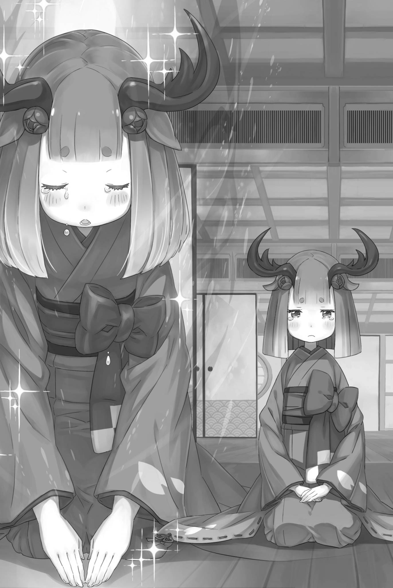

『理想乡卡欧斯弗莱姆』
「呜、呜、啊哦……」
「啊啊，啊啊，流着鼻涕哭泣，真是麻烦啊。」
昴抽泣着，啜泣声不停。身体紧贴着奥尔巴特，奥尔巴特耸了耸肩，无聊地用手指抓着脸颊。
——那是一场无以言表的，惊人的经历。
在绝望的十秒钟内发生在昴身上的事情，以及在度过那段时间后的第十一秒之后——在到达那个地方之前，他究竟品尝了多少次『死亡』？
绝望一次次将心击碎，磨损至此的灵魂竟还没有消散，简直是个奇迹。
但是，在这样地狱般的经历之后，他终于到达了那里。
「呜啊哦。」
紧紧抱住痛哭的昴的手臂，呜咽着的是路伊。
虽然路伊没有和昴一起经历那些事情，但在无数次的尝试和错误中，她也多次遭遇了与昴相同的命运，失去了生命。
就连扑上奥尔巴特的背、靠近乎强词夺理的宣告赢下胜负，也是没有她就绝不可能做到的。
「我真的……真的不明白你。」
「呜。」
「但是，如果没有你，我做不到。……谢谢。」
昴心中的感情已经是一团糟了。
他知道路伊做了什么，他也知道他们之间的一切渊源。尽管如此，感激之情仍然涌上心头。
然而，不仅仅是昴的感激之情。
「呜啊，呜……」
「路伊？」
崩溃是突然发生的。
听到昴结结巴巴的感谢之词后，路伊那双大大的圆眼睛里泪水涌出，顷刻间沿着脸颊流下。
泪水顺着路伊的脸颊流下，那势头仿佛不知道如何停止。
「路伊，你哭了，你哭了所以……」
「呜，呜！」
路伊想必也知道自己在哭，却既不试着止住泪水，也不去擦。她只是一直死死抱着昴的手臂，那般拼命，仿佛生怕自己擦泪的工夫，昴就会消失。
「把脸擦干净，傻瓜，傻瓜……」
看着路伊的泪水，原本情绪稍稍平复的昴又开始动摇。流下的泪水，抽泣的声音，已经数不胜数了。
就这样，路伊和昴两个人，会不会一直一直哭个没完呢——
「——你们两个都很努力。」
「啊……」
「想哭多少都无妨。奴家以魔都之主的身份，准许你们尽情哭泣。」
就在这时，一双长长的手臂从后面轻轻地，温柔地拥抱了昴和路伊。
那话语温暖而柔和，昴惊讶地睁大双眼，不由看入近旁那张美丽的侧脸。长长的睫毛、点着朱色的唇，以及闪着光的澄澈蓝眸——那双眼睛如此宽广，仿佛能容纳他所有的烦恼与苦痛。
他已经知道那双瞳孔的主人是怎样的人了。
所以，他知道那些话语和温暖都是真诚的，没有任何欺骗。
他知道，即使把一切都交托给她，也会被温柔地接纳。
「呜，呜……啊，啊，啊啊。」
「呜啊哦……呜啊哦，呜啊，呜，呜啊哦……！」
「好啦，好啦……哭着扑进大人怀里，可是孩子的特权。若不嫌弃奴家的怀抱，就尽情哭个够吧。」
抬起头，昴的泪水再次流下。紧紧依靠着他的路伊。
温柔地拥抱着两人，抚摸着他们小小的背影的尤尔娜。在这场战斗结束后的片刻，红琉璃城的天守阁里上演着这一幕——
「这些事全在咱背上发生，咱到底该摆什么表情才好啊？」
「闭嘴。」
让无趣的怪老头安静下来的，是魔都的主人。
※ ※ ※ ※ ※ ※ ※ ※ ※ ※ ※ ※ ※ ※ ※ ※ ※ ※ ※ ※ ※ ※ ※
「那么，奥尔巴特老爷子有什么要解释的吗？」
「解释？咱有什么好辩解的？狐娘，凭着自个儿的性子就打过来的，不是你吗？」
「————」
从昴的大哭过后没过多久，本以为终于能够平静地进行对话——可是，天守阁里的气氛突然变得紧张。
原因无需多言，正是飘飘然一副毫不在意的奥尔巴特。
他悠哉地坐在屋顶上，用小指挖着耳朵，
「咱好歹守着说好的规矩吧？是，咱是想钻点空子，不过这点跟那边的小子正好扯平啊。」
「呃……但是，那是……」
「好啦好啦，小子，听咱一句才划算。——真要是什么都能做，最占便宜的可是咱啊。喀喀喀喀！」
对大笑着的奥尔巴特，昴哑口无言。
实际上，奥尔巴特说得没错。在这里，如果指责奥尔巴特违反规则，结果变成无视规则什么都可以的状况，要打败忍者奥尔巴特的方法，恐怕根本就找不到。
奥尔巴特藏着不少手段，也从不犹豫将旁人卷入。来到帝国后，昴早已吃够苦头，知道这种对手才最难对付。
「有时候，奥尔巴特先生，让我觉得和我认识的可怕家伙有些相像……」
「真的吗？那还是赶紧杀了他吧。肯定不是什么好人，而且肯定特别麻烦。」
「如此说来，奴家若要在此取你性命，奥尔巴特翁也该赞同才合道理吧。」
「喂喂，还真是讨厌咱啊。不过，也是当然的嘛。」
紧张的气氛弥漫着，但这是因为尤尔娜散发出的一方面的敌意。
而成为敌意的对象的奥尔巴特已经完全解除了战斗状态。当然，这也许是假象，他也许可以在一瞬间切换。
尤尔娜愤怒是理所当然，昴同样对奥尔巴特满怀怒火。可有一个极其重要的理由，让他无法任由愤怒驱使自己。
那就是他缩小了的手脚，还有他无法正常工作的头脑。
「奥尔巴特先生，关于我们被施加的那个忍术……」
「哦，那件事啊。当然，咱一死，这术就解不开了。也许还有别的法子吧，不过咱可没见过有人解开。」
「果然……！」
「嗯，就像保险一样的东西。毕竟，在我们的村子里也算是秘术，基本上会把尸体处理得无影无踪，让人发现不了。」
奥尔巴特淡然地说出令人毛骨悚然的事实。
与此同时，昴也不禁佩服自己，竟真的在这条悬于生死边缘的细线上走了过来。
即使尤尔娜战胜了奥尔巴特，如果奥尔巴特死了，昴他们的『幼儿化』还是无法解除。他们会一直保持纳奇基・施瓦茨的状态。
光是想想就让人毛骨悚然。
「奴家虽不知详情，却听说你对这些孩子下了狠手。」
把烟斗放在嘴里，吸入紫烟的尤尔娜注视着奥尔巴特。
在寻求她的帮助时，昴尽量传达了诚实的信息，但他省略了一些复杂的情况。其中包括昴因为奥尔巴特的技术而变小的事实。
奥尔巴特一解开『幼儿化』，昴就能恢复原状。
到那时，他打算诚心诚意地道歉，请尤尔娜原谅。——想来她总不至于仅因这件事，就把此前对他的印象全都推翻。
他希望尤尔娜是那种能通过交谈理解他的人。
「奥尔巴特老爷子，你承认了刚才的失败吧。」
「哦，承认了承认了。被那样对待，完全失败了。只是没死而已，算是运气好。不过，输掉比赛是出乎意料的。」
「出乎意料，是吗？」
「我原本以为能和我打得好的应该是小子们的首领。」
昴的担忧被搁置在一旁，尤尔娜和奥尔巴特继续交谈。听到奥尔巴特的话，尤尔娜轻轻地咕哝了一声「首领」，然后轻轻地把手放在她和服的胸口，
「那位就是亲笺的寄件人吧。我一直期待着与他见面……」
说到这里，尤尔娜忽然停住话头，朝奥尔巴特微微眯起双眼。
奥尔巴特感受到她锐利的目光，好奇地问：「怎么了？」
「最吓人的莫过于被美人瞪着啦。怎么了？」
「还问怎么了？奴家让坦萨传话，请使者们到城里来。——坦萨那孩子，如今去了哪里？」
尤尔娜的话让空气突然变得冰冷。
尤尔娜的愤怒总是在城市居民和孩子们受到伤害的时候显现出来。更何况坦萨满足了这两个条件。
不过，坦萨有与奥尔巴特串通、阻止昴他们见到尤尔娜的嫌疑。如何说起她的事，仍须谨慎。
然而——，
「我本以为坦萨会和奥尔巴特先生在一起。但是，她不在……对吧？她没有藏在瓦片下面什么的……」
「城内就如同奴家体内一般。谁进来了，谁藏在里面，奴家绝不可能漏看。」
「哦，原来如此。尤尔娜的术真厉害……」
听到充满自信的尤尔娜的回答，昴对她的超凡实力感到惊讶。
惊叹之余，他忽然想起：自己和路伊才刚转移进红琉璃城，便立刻被尤尔娜发现了。
那时候，尤尔娜说她在城里漫步，偶然发现了他们，但那可能是借口。实际上，她察觉到昴和路伊突然出现在城里，立刻行动起来抓住入侵者。
她没有当即抓住他们，而是把两人当成坦萨的朋友，也许只是因为昴和路伊太过年幼，连她也一时拿不准该如何对待。
归根结底，从一开始遇到他们时，尤尔娜就一直在保护他们。
「——」
越是接触尤尔娜的品性，昴就越是产生一种疑虑，他是否应该将她卷入佛拉基亚帝国的大战。
他也开始理解那些中途拦住去路、生活在卡欧斯弗莱姆的有角人种的心情。
他们在经历苦难后被排斥，最终找到了一个可以安居的地方，想要保护这里。
他们希望维持平和的生活，这样的愿望有什么值得责怪的呢？尤其是当他们有一个关心他们的领主的时候。
——那与昴深爱的女孩所期望的世界有什么不同呢？
「——」
昴默默地俯视着从天守阁望去的城下和杂乱无章的魔都街景。
这座城市五彩斑斓，错综复杂，乱七八糟，没有统一性。当他第一次来到这个城市时，他对这种混乱感到困惑。
然而，在短暂的时间里，昴看到了这个城市的居民和尤尔娜，他认为：
这里充满了自由。
没有人束缚，不用压抑自己的自由就在这里。所以，在这座城市里，人们可以表达自己的想法，没有人会否定这种多样性。
这里自由、平等、公平。
这个地方似乎描绘了某种未来的理想图景。
从这样一个地方夺走尤尔娜，真的是他应该做的事情吗？
「老爷子，快回答我。那孩子，坦萨到底在哪里？」
昴的矛盾被置于一旁，尤尔娜继续向奥尔巴特追问。
坦萨不在城里。奥尔巴特不可能有把缩小的人藏在怀里的本领吧。
「用不着摆那么吓人的脸，咱会老实告诉你的。跟那鹿姑娘联手，也不过是恰好凑齐了能用来比试的条件罢了。」
「——她在哪里？」
尤尔娜的追问刺向奥尔巴特，暗示着多余的闲聊是不必要的。
接受了这一点，奥尔巴特歪着脖子，将目光投向城下——俯瞰着魔都的绝佳景色。
「这事并不复杂。我只是个外人，能藏一个女孩的地方可不多。」
这便是他给出的回答。
※ ※ ※ ※ ※ ※ ※ ※ ※ ※ ※ ※ ※ ※ ※ ※ ※ ※ ※ ※ ※ ※ ※
——在奥尔巴特回答尤尔娜的质问之前的一段时间。
这发生在魔都卡欧斯弗莱姆内的一家旅店。
这家旅店并不大，也没有华丽的装饰，是一家平凡的旅馆。——然而事实上，建筑的墙壁和内饰都制作得非常坚固，即使是普通的声音也无法穿透。
在这个卡欧斯弗莱姆里，这个气氛截然不同的地方，可以说是为了备战不测，而特意准备的要人住宿设施。
成为舞台的这个房间，因为内饰的关系，墙壁被拆除，三个房间被连接在一起，形成了一个宽敞的空间。尽管如此，这个宽敞的房间里住着的，只是在使用这家旅馆的人当中极少数的地位之人。
高贵的家具、让人愉悦的艺术品、让舌头舒服的美酒都没有准备，这是因为使用这里的人大多是实用主义者。
在这个意义上，这家旅馆在卡欧斯弗莱姆中的位置也是相当特殊的。
魔都作为无法之地的象徵，充满了「自由」。与这种混乱的状态背道而驰的是，在尤尔娜的统治下，卡欧斯弗莱姆的居民们意志统一得令人惊讶。
提倡一种共享幻想的人们，在对外敌毫不留情的同时，对内患则有怜悯之心，因此这样的旅馆之类的设备是不需要的。
确实——，
「——正是一座背离『帝国之民当精强』这一理念的魔都啊。」
「啊……」
「地方施政，固然在一定程度上交由都市之主裁量。可凡事总有限度。——正因尔等不知分寸，才做出这等事么？」
这样，交叉双臂的男人向矮小的少女提问，少女脸颊僵硬，沉默不语。
提问的男人，穿着黑红相间的装束，脸上戴着鬼面，名为埃布尔。与之对立的是，穿着美丽和服，拥有鹿角的亚人少女，坦萨。
在这座城市里，两个被推测为敌对关系的人物面对面相遇。
不，确切地说，不仅是埃布尔和坦萨两人相遇。
「你们这些家伙，知道这到底是个什么地方就闯进来了吗……！」
「———」
「回答我！根据回答的内容，你们甚至可能不剩一根骨头！」
肤色微黑的帝国二将卡夫马・伊鲁克斯气得脸色通红，盯着闯入旅馆房间的埃布尔，以及随行的少年和少女，厉声喝问。
虽然他伸出的手里什么都没有拿着，但他根本不需要武器。各种武器，都已经潜伏在卡夫马自己的体内。
不剩一根骨头，这不是恐吓也不是什么别的，只是事实。
——这就是『斗虫将』卡夫马・伊鲁克斯的真实实力。
「喂，埃布尔酱，你真来啊？」
面对卡夫马的威压，蒙面的少年阿尔紧绷着声音，满心警戒。他背着如今已经使不动的青龙刀；听到他发问，埃布尔瞥了他一眼。
「你这家伙，问了多少次才能下定决心？」
「我问这么多次是因为我还没下定决心。话说回来，你是不是疯了？该死，我怎么也跟着你过来了……！」
「原因不是明摆着么。——如今的你，胆小得连独自一人都不敢。」
「呃……」
阿尔的声音突然哽咽，接下来的话也说不出口了。这是一目了然的被戳中要害的反应，但他无法反驳，这正说明了阿尔自己也有所察觉。
不知为何，现在的阿尔只要走在路上就无法保持平静。
「埃布尔酱。」
在阿尔无言以对的时候，另一个同行者，米迪娅姆代替他抗议地叫了埃布尔一声。
米迪娅姆一路护着已派不上用场的阿尔，竭尽全力陪埃布尔走到这里。然而，此刻她的脸上也笼着浓重的阴霾。
这全都是因为在半途中，昴和路伊离开的事情。
「我觉得，刚刚那种说法可不太好哦」
「你以为眼下是该拐弯抹角、增进相互理解的时候？你与那小丑，都给我认清处境。一步走错，便会如对方所言，连骨头都剩不下。」
「所以呢！那种说法才不好呢！」
「———」
「就是因为埃布尔酱那么说，昴酱和路伊酱才会……」
米迪娅姆一开始用力地反驳，但随后的话语逐渐变得无力。
这是她性格使然的事情。她虽然想把发生的问题都归咎于埃布尔，但充满关爱的她却无法这样做。
她清楚地意识到，自己的态度和眼神等因素也逼迫着昴他们。这方面，恐怕也得益于那个哥哥的教育吧。
无论如何，阿尔和米迪娅姆此刻都已难以发挥应有的作用。
「所以，我们也没有打算争斗。放下你的手吧，卡夫马・伊鲁克斯」
「你……是在说笑吗？不回答我的问题，却横蛮地把自己的意愿强加给别人。你这种行为，是以为自己已经成为国王了吗！？」
「——差不多吧」
「你这家伙――！」
卡夫马的眼睛充满血丝，他对皇帝的忠诚感愤怒地达到了极限。
卡夫马无意中已触及埃布尔的真实身份，却仍离真相差了半步。这正是在修德拉克聚落得到的鬼面所具备的强大『认知阻碍』效果。
换句话说，除了那些被戴上面具的人打算透露真实身份的对方和确信戴上面具者身份的人之外，任何人都无法超越这个面具的效果。
所以——，
「再也无法忍受带着孩子的闹剧了！尽管昨天的事情发生了……」
「——安静下来，卡夫马・伊鲁克斯」
正当卡夫马的手臂用力，手臂上的纹身开始蠕动时，从背后传来的声音让他瞬间停下。
卡夫马睁大眼睛，回头望去。房间深处，一位黑发美男子正悠然坐在安乐椅上。
黑发黑瞳，他英俊的容貌独一无二，仿佛透彻洞察一切的目光在未受邀请的访客面前毫不动摇。
埃布尔也不禁感叹，这也是一个相当成功的『面具』。
埃布尔兀自感叹，房间深处的美男子则将他们三人逐一打量过，开口道：
「他们没有敌意。至少，在这种情况下」
「但是，阁下！他们竟然在您面前没有露出脸，更别提一点敬意都没有，而且还带着孩子……」
「带孩子有什么关系」
「不，带着孩子实在是让人无法理解……！」
难以掩饰困惑的卡夫马，他揉着眼睛与苦恼作斗争。
本来，这个名叫卡夫马的男人有一个太过认真对待事物的恶习。认真对待事物与增加烦恼的空间是两回事。
正因太过认真，他甚至曾认为自己不配，主动辞去『九神将』之位。——也就是说，撇开性格不谈，他拥有足以比肩『九神将』的实力。
即使没有人被奥尔巴特的毒牙所伤，即使塔莉塔一同出现在这里，与卡夫马的对战也是不可能的。
在这一点上，这次的战斗对埃布尔等人有利。毕竟——
「我道歉，给你的休息添了麻烦，但我的目标是那个女孩。目前，我无意与你们争执」
「什么……」
「哦。在余面前，口气倒是不小。这张脸、这个声音，你总该认得。何况你们若与昨日在天守阁见到的使者有关，就更该如此。」
「哼」
皱着眉头，埃布尔摸着鬼面的下巴，怒视着对手 —— 假装是皇帝的人，他已经知道了那个人的真实身份，是奇夏・戈尔德化身的文森特。
在埃布尔的身边，阿尔和米迪娅姆露出复杂的苦涩表情，这是因为他们在『认知阻碍』的效果之外，与文森特的对话听起来像是完全相同的声音的互相交流。
奇夏这个『白蜘蛛』的伪装是完美的。
无论声音还是举止，若论扮演文森特・佛拉基亚的替身，这世间恐怕找不出第二个比奇夏・戈尔德做得更好的人。
甚至，人们会觉得他比埃布尔更像文森特，这种矛盾的想法也会产生。
但是——
「部下曾向你问候，此事我已听说。以佛拉基亚皇帝的严酷，竟能如此宽容地放过一个无礼女子的冒犯，倒是难得。」
「余也没有闲到去陪不知天高地厚之人胡闹。可既然认定对方有相应的价值，自然该给予相应的待遇。毕竟——」
文森特回应着埃布尔的讥讽，话语稍顿。两人的目光在半空相交，双唇同时开合。
「「帝国之民当精强」」
没错，这就是神圣佛拉基亚帝国的理念，象征性的存在。
作为佛拉基亚皇帝，他对于表现出反抗意志的人，给予了相应的回应，这是无可厚非的。
即便把同样的问题抛给埃布尔，他也会作出同样的回答。
不管他怀揣着怎样的想法，都是如此。
「卡夫马，那个女孩」
「是。奥尔巴特翁吩咐将她安置在这家旅馆……只是，老人家出门上街后，至今尚未回来。」
「原来如此」
听过卡夫马略显尴尬的答复，文森特缓缓颔首，转而看向坦萨。
少女缩在房间一角，原想至少恪守受人庇护的本分。被帝国顶点投下的目光俯视，她肩头一颤，漏出一声「啊」。
文森特将坦萨这不知是怯意还是畏惧的反应视作理所当然，继续道：
「奥尔巴特的介入，昨日与尤尔娜・米希格蕾的约定，再加上与昨日使者相关之人前来找你，事情的大概也就清楚了。」
「我，我是……」
「不必辩解。奥尔巴特・邓克尔肯那边，余自会令他说出实情。可你的主人并非余，你的敌人也并非余。」
「啊……」
「既已挑起战斗，便尽力抗争到结束。你所选择的命运，是否要由此燃烧殆尽，自己决定。」
淡然地，文森特向坦萨宣告了他不会再提供庇护。
然而，这是否意味着坦萨被抛弃，陷入绝望，这是个错误。
「——」
坦萨圆圆的眼睛里闪烁着的，或许是她在决定挑战这场战斗、这场反抗时，那时的光芒，那时的决心之火。
坦萨是有角人种族，她的一生肯定是充满坎坷和黑暗的，这对埃布尔来说可以轻易地想象得到。更何况，作为卡欧斯弗莱姆的鹿人，她的种族是先前尤尔娜・米希格蕾引发的叛乱的根本原因。
或许坦萨本人和那些牺牲者之间也有某种联系，这也不足为奇。
「文森特陛下，对您造成了麻烦。然而，这一次的事情，都是我在主人尤尔娜大人不知情的情况下，自行策划的」
「我刚才也说过，不需要解释。事实如何，我会向尤尔娜・米希格蕾追问。我会记住你想亲自说出口的决心」
「是的。谢谢您」
坦萨端正了坐姿，跪在地上，深深地向文森特鞠了一躬。然后抬起头，她的目光转向了埃布尔等人。
与面向文森特的目光不同，她的眼神充满了明确的敌意。
「――っ」
在少女的气魄面前，待在后面的阿尔喉咙微微响了起来。
阿尔固然胆小得过了头，可少女那股足以震慑人的气势也货真价实。至于是什么将她逼到这一步，埃布尔并不难想象。
一切都是——
「——请不要将尤尔娜大人卷入战乱。她是一位温柔的人，一定会为了许多弱者而战斗、受伤、磨损的。我绝对无法忽视这样的事情。尤尔娜大人是我的一切。」
「啊……」
「请，请一定要答应我。请……」
小声颤抖着声音，如此恳求的坦萨让米迪娅姆目瞪口呆。
对阿尔和米迪娅姆来说，坦萨所拥有的动机似乎有些出乎意料。基本上，维护有角人种的立场，这是路上袭击他们的居民们的目的。
失去尤尔娜・米希格蕾的庇护，他们将失去名为魔都卡欧斯弗莱姆的安居之地，恐怕会再次开始长时间的艰苦日子。这是出于恐惧。
或多或少，魔都居民们抱有的是同样的情感。
但另一方面，魔都大部分居民抱有的情感更偏向于坦萨这一边，这对埃布尔来说是可以想象到的。
让他如此确信的，是已经完全渗透到城市居民中的『魂婚术』的存在。
那是一种单方面的情感无法实现的秘术。
她究竟用了什么办法，能与如此庞大的人数缔结这本足以令人发狂的秘术，埃布尔尚无确证。不过，无论如何——
「决定的是尤尔娜・米希格蕾。就算你向我低头，事态也不会改变」
「——你这家伙！」
双臂交叉，如此回答的埃布尔不知何故让卡夫马愤怒增加。
他与坦萨几乎素无瓜葛，却仅因她年幼便生出几分怜惜。就这一点而言，他与尤尔娜大抵算是同一类人。
而且，只有关于魔都的本质，卡夫马看不到的东西，坦萨却能看到。因此，她低着头，接着说道：
「不，不对。决定的不是尤尔娜大人，而是您。」
「——」
「尤尔娜大人的心胸宽广而深邃，她是一个温柔的人……而且，我们无法帮助她实现那个遥不可及的梦想。您一定拥有实现那个梦想的方法。」
「……你知道尤尔娜・米希格蕾的亲笔信的内容吗？」
「不知道」
摇头，坦萨否定了埃布尔的疑虑。然而，坦萨将摇过的头停在正前方，露出一副无比惆怅的表情低头说道，
「但是，我知道。——因为，那是我第一次见到尤尔娜大人那样的少女面孔。」
「少女的面孔，是吗？」
「尤尔娜大人会回应给予她的爱。但是，她亲自去如此挂念别人的模样……答案就在那封信里。」
「你认为尤尔娜・米希格蕾不会拒绝，所以」
「——是的。我策划了一切。」
深深地低下头，坦萨坦言自己的计谋。
并非真正的一切。毫无疑问，奥尔巴特参与了坦萨的计谋，使其内容变得更加邪恶。
然而，坦萨承认是她自己开始的，是她自己的意愿使然，并且包括奥尔巴特参与的部分，将其视为自己的责任。
这实在是太——
「——漂亮了」
这样的声音，只在谁也听不见的嘴里形成。
当然，这并没有被任何人听到，低下头的坦萨、警戒着的阿尔和米迪娅姆、忍着愤怒的卡夫马以及托着腮帮的文森特都没有听到。
「我了解了你的参与情况。但是，接下来该怎么办？」
「——怎么办，你是说？」
「即便坦白了内情，只要你愿意，仍可让这局面持续下去。就算人头落地，也能让魔都居民继续追杀我们。——不，真到了你人头落地的地步，我便不可能再与尤尔娜・米希格蕾联手。」
「——」
「或者说，你甚至已经把自己的头颅落地也算在计谋之中了吗？」
低头不语的坦萨，她的颈部微微紧张。埃布尔注意到这一点，确信坦萨甚至已经把自己的死亡也留作了最后的手段。
这是很可能发生的事情。——虽然决定付诸实践的人很少。
「你原本就打算死吗。……真是个不得了的姑娘。」
「那怎么行！我绝对不会让这种事发生！你也不会的，对吧，埃布尔酱？」
了解坦萨的决心后，阿尔哑口无言，而米迪娅姆则瞥了埃布尔一眼。
倘若埃布尔此刻给出违背米迪娅姆意愿的回答，她会作何反应，倒也值得一想。不过，想这些毫无意义。
「我说过的。如果连自己的死亡都算在计谋之中，那么夺走她的生命就意味着完成她的计谋。可惜，我并没有打算配合这样的计谋」
「埃布尔酱……！」
「人应该更高效地走向死亡」
「埃布尔酱……」
不按照预期行动的棋子，无论是在己方还是敌方，都是麻烦的存在。
考虑到这一点，坦萨这个存在也可说是无法驾驭的毒药。但是，如果没有勇气去喝下这种毒药，就无法吸收更大的毒药。
作出这样的判断后，埃布尔凝视着坐在地板上的坦萨，
「我并没有打算夺走你的生命。但是，我要你撤回对同胞们发出的命令」
「那么，之前的请求呢？」
「让尤尔娜・米希格蕾不卷入战乱，是吗？——那是不可能的」
「——啊」
埃布尔断然地这么说，使坦萨哽咽起来。
对她来说，这是她为了阻止而甘愿拿生命作赌注的事态。然而，坦萨误解了。而且，这是一个令人绝望的误解。
因为——
「即使我不在这里，尤尔娜・米希格蕾也会卷入战乱。那是她所选择的立场，是无法回避的命运」
「您到底看到了什么……」
「我不打算向他人诉说我所看到的一切。但是，既然可能发生，就要采取措施。无论周围的人如何看待这一切」
埃布尔回应着颤抖的坦萨的目光和声音，突然移开了视线。
那黑色的眼睛转向了房间深处，站立着的无言的文森特。如今坐在皇帝宝座上，声称虚假皇位的文森特・佛拉基亚。
即使他出于何种思惑驱逐了我——
「我的行事不会改变，也无从改变。退路已焚，只剩一条路可走。——将此铭刻于魂吧。」
「——余记下了。」
听到埃布尔的话，文森特平静地回应。
仅仅这一句话，室内的空气仿佛被烧焦，产生了一种升温的错觉。实际上，除了埃布尔和文森特以外的人，额头上都渗出了汗水。
「女孩，坦萨，抬起头来」
新旧皇帝之间的对峙结束后，埃布尔叫住了懊悔自己力量不足的少女。慢慢地抬起头，眼中含泪的女孩听着埃布尔叹息，
「我本就不是抱着将她用尽榨干的打算，才来招揽她。她该如何用，虽须仔细斟酌，珍贵的战力自当用在最合适之处。——毕竟，人应当死得有效率。」
「……我可以相信这些吗？」
「无论你是否相信，我所做的事情不会改变」
想要依靠刚刚萌芽的希望的坦萨，在那里降下了并不温柔的回答。
阿尔在背后抬手抹额，米迪娅姆也叹了口气，然而，坦萨在略微犹豫后，点了点头。
「我明白了。……请一定要保护尤尔娜大人」
「若要我回应这请求，你也须有所行动。再这样下去，我们连在城中走动都做不到。」
「啊，对了。我们本来就是为了那个目的才来这里的嘛」
听到埃布尔提出的条件，阿尔激动地说道。
如今的阿尔对一切都满怀恐惧，这无疑是生死攸关的问题。当务之急，是让那些听从坦萨号召、四处追逐埃布尔一行的人收手。
「但是，您是怎么知道我在这里的？」
「我判断奥尔巴特会如此行事。也考虑过你被藏在红琉璃城的可能，只因追兵的分布与距离，才优先来了这里。」
「——啊」
「首要任务是让你们收手，因为我们这边有很多生命岌岌可危的人」
被一百人追赶的塔莉塔，以及因结果而采取分散行动的昴和路伊。
只要他们继续被大量人追赶，就无法保证他们的生命安全。当然，已经失去战斗力的阿尔和战斗力减半的米迪娅姆跟随埃布尔的，也不例外。
为了继续与奥尔巴特的对决，攻略坦萨是最优先的任务。
「……我输了，对吧？」
「这是显而易见的。但是，你不必感到羞耻」
「啊……？」
埃布尔回应了坦萨轻声说出的话，然后转过身去。
没能听到后面的答案，坦萨眨巴着大眼睛。这时，有人叫住了她的背影。
「文森特，大人……」
「正如那家伙所说，你不必感到羞耻」
「可、可是，我……」
「你输了。可这也意味着，你曾发起挑战。——余也愿如此。」
「————」
坦萨瞪大眼睛，看着依然支着下巴，稍稍望向远方的文森特。然而，她的眼角缓缓积累了泪水，她低下了头。
低头流泪，轻轻地静静地掉下泪珠，
「尤尔娜大人，对不起……我太不成熟了……」
这样，她泪声哽咽地向心爱的主人道歉。
※ ※ ※ ※ ※ ※ ※ ※ ※ ※ ※ ※ ※ ※ ※ ※ ※ ※ ※ ※ ※ ※ ※
将仍在落泪的坦萨留在身后，几人继续交谈——
「首先，我们现在可以认为袭击我们的人暂时退缩了吗？」
「应当如此。当然，也不能排除坦萨以眼泪骗取我们信任的可能……」
「没那回事。绝对不可能！」
脸颊鼓起，双手叉腰的米迪娅姆冲着埃布尔的担忧如此反驳。
埃布尔眯起一只眼睛，一边用手指摸着鬼面额头，一边说：
「至于你，状况似乎仍未好转？」
「呃……」
「如果不能派上用场，别无选择只能毫不留情地抛弃你。就算你是普莉希拉的小丑，也别以为那是免死金牌。记住这点」
「我、我知道……我也不想一直这么狼狈」
被瞪着，面临冷酷宣告的阿尔咬着牙回应。
回嘴的声音没有力量，阿尔的恐惧并没有消失。然而，不管阿尔的身心如何，他们现在应该可以走在街上了。
「那么，接下来继续找老爷爷……唔，是不是先找塔莉塔酱更好？还是……」
「如果目的是会合，我们主动行动是下策。以塔莉塔的眼力，她肯定能比我们更快地找到我们。至于那帮蠢货们的事情……」
「嗯、嗯……」
「——总之，他们也会继续寻找奥尔巴特。那在找奥尔巴特的途中，应当也能找到他们。前提是，能摸清『视野绝佳的深渊』指的是哪里。」
交叉双臂，埃布尔这样喃喃自语，米迪娅姆瞪大眼睛说「哦」。
「难道埃布尔酱已经知道老爷爷藏在哪里了？」
「至少，我已经确定了第二个藏身之处。那就是红琉璃城」
「怎、怎么可能这么肯定。还有，那座城？」
「从坦萨的反应判断。当我提到城堡时，她的眼神闪烁。坦萨本人藏在旅馆里，但她可能也知道奥尔巴特的藏身之处。当然，她是否知道第三个藏身地，我就不清楚了」

按照步骤，奥尔巴特和坦萨联手，坦萨传递消息后，奥尔巴特向埃布尔等人发起挑战。然后，在第一次隐藏地点被发现后，奥尔巴特带着坦萨出去，与旅馆的其他人汇合，这样的流程才自然。
当然，奥尔巴特也可能预料到坦萨会落入他们手中，事先给了她假消息。
「藏身于红琉璃城的手法，也是奥尔巴特喜欢的做法。」
「……嗯，明白了。那么，我们最好快点去城里。」
「是啊，得赶紧让那老头把身体变回来……身体恢复了，应该就没事了。到时候，兄弟和那个小不点的事也……」
阿尔紧握拳头，像诅咒一般，又像祈祷一般喃喃自语。
因为自己的身体缩小了，心态也逐渐失去余裕的阿尔，对消失的昴和路伊之间的关系也充满敌意。
他大概也希望昴尽早恢复原状，好对路伊作出正常的判断。不过，即使身体复原，菜月・昴究竟能不能作出正常判断，埃布尔仍存疑虑——但在那之前。
「无论你如何想，我都不打算让奥尔巴特轻易解开术式。」
「啊？」
「什么？」
「准确地说，你和米迪娅姆可以恢复。可菜月・昴身上的术，我暂时不打算让他解开。让那家伙再保持一阵现在的模样，才是上策。」
听到埃布尔的这个决策，两人都张大了眼睛和嘴巴，惊愕不已。
然后，停顿了一下，
「别开玩笑了！这是怎么回事！？我们没听说过这个啊！？」
阿尔愤怒地颤抖着声音，猛地抓住埃布尔的衣领——由于身高问题，他抓住的是埃布尔的腹部，痛斥道。
然而，面对阿尔那无力的威胁，埃布尔毫不动容地回答：「正如你所听到的。」
「让他保持那个幼小的模样还要一段时间。」
「你这……」
「那和你一直欺负昴有关系吗？」
阿尔又往前逼近几分，米迪娅姆从后方抓住他的肩膀，目不转睛地看着埃布尔，如此问道。
被这样问，埃布尔静静地叹了口气，
「我可没做过那么低级的欺负别人的事。」
「怎么说都好啦！埃布尔酱，路上你不是一直在吓唬昴酱，想逼他说出什么吗！就是因为这个？」
「————」
「那太卑鄙了！如果有什么想问的，只要正常提问，他会回答的！所以，那种事……」
「——遗憾的是，事情没那么简单。」
听到那平静的声音中蕴含的宁静情感，米迪娅姆不禁张口结舌。
埃布尔无视惊讶的米迪娅姆，轻松地甩开阿尔抓住的手臂，
「我的想法与米迪娅姆的猜测无关。只是，这是必要的。」
「必要！？什么必要！为什么偏偏是兄弟……我和米迪娅姆就不行吗！」
「你们不符合条件。你是独臂，米迪娅姆则是发色与瞳色不符。」
「啊……！？」
不明所以的言论让阿尔的愤怒愈发激烈。米迪娅姆也一脸不解，被另一个惊奇的事实所困扰。
而关键的埃布尔——，
「尽管情况仍然没有改变，但棋子正逐渐齐全。因此——」
隔着鬼面，埃布尔望向旅馆房间的窗外，将红琉璃城收入眼底。
那是为了凝视比城堡本身更具象征意义的东西的姿态。事实上，埃布尔伸出手，试图抓住遥不可及的东西，
「——菜月・昴，你得奉陪到底了。随这阵不可抗拒的风，一同踏进战乱中心。」
※ ※ ※ ※ ※ ※ ※ ※ ※ ※ ※ ※ ※ ※ ※ ※ ※ ※ ※ ※ ※ ※ ※
「所以说，那鹿姑娘就在阁下那里啊。」
「……」
奥尔巴特盘腿而坐，双臂抱胸，若无其事地回答。听到他令人惊讶的答案，昴无论如何都感到惊愕。
惊愕的原因并非因为这完全超出了他的想象。
「要是不在城里，我就想，会不会是你们住的旅馆……」
「哦，原来想到了啊。那小子，你这心眼可真够坏的。该不会真有佛拉基亚皇族的血统吧？」
「请不要开这样的玩笑，真的会吓到人的。」
虽然这可能是奥尔巴特的笑话，但他的笑话真的一点也不好笑。他仍然一如既往地高兴地「哈哈哈哈！」笑着，这可能是长寿的秘诀。
不在意别人，不累积压力，经常笑。真是个好榜样。
「我家乡有句谚语，叫『祸害遗千年』。」
「哦，这是谚语吗？有什么意思呢？」
「坏人更长寿……」
「哈哈哈哈！这真是无法辩解的。痛！」
「啊哇！」
奥尔巴特听了谚语的意思放声大笑，路伊愤愤地捶了他一拳。其实不过是在肩上拍了一下——刚才连碰到他都那么艰难，如今却成了这副光景。
或许，如果奥尔巴特认为这是敌意或杀意，他会以帝国最强者之一的实力应对。
从这个意义上说，昴用路伊的传送给奥尔巴特的不是攻击，而是追逐的触碰，这是正确的选择。是的，他自己也这么认为。
「总之，坦萨的下落清楚了……听闻奴家城中的居民给各位带来了许多伤害，奴家在此赔罪。」
「啊，别这样，尤尔娜，不用道歉的！」
「嗯！」
昴慌张地看着跪在地上、表达歉意的尤尔娜。路伊也不禁跳了起来，让尤尔娜低头道歉意义重大。
实际上，尤尔娜认真地倾听着我们的话，即使面对奥尔巴特也毫不退缩，一次又一次地试图帮助昴，因此——。
「唔……」
「——？怎么了，孩子？你的脸怎么这么红？」
「啊，没什么，只是突然想起了一些事情……」
随着局势逐渐平息，那如梦魇般的痛苦和折磨渐行渐远，他想起了在那连续的事件中，他和尤尔娜多次亲吻的情景。
尤尔娜并不记得那些事，昴当时也根本无暇记住亲吻的触感，只记得这件事确实发生过。
即便如此，为救濒死的孩子，她竟愿意亲吻他，试图让他爱上自己。这样的尤尔娜，实在令昴敬佩，也令他不由喜欢上了她。
正因为如此——
「我不想，把她卷入其中。」
昴强烈抵制将尤尔娜卷入战斗，将她拖入可能撼动整个帝国的战场。
这是否是因为昴变得幼稚了，还是因为当他恢复正常时，会有更多不同的想法涌现出来，他并不清楚。
但是，即使恢复正常的昴采取了不同的想法，他也无法认为那个年幼的昴所感受到的和所思考的是错误的。
因为，如果那真的是这样的话——
「哇哇？」
「该怎么对待你，我不想全交给别人决定——即使那个人是恢复原状后的我。」
与他相连的少女，路伊的待遇在昴心中仍是一个无解的问题。
如果与埃布尔他们汇合，这无疑将成为一个无法避免的话题。然而，在那绝望的十秒中，昴感受到了一件事。
——他既不想让路伊杀人，也不想让路伊死去，仅此而已。
「我们把城堡的修复放在后面吧。首先，我们要去接坦萨。」
「啊……尤尔娜，关于坦萨的事情……」
可「请别太责怪她」这种话，以昴的立场也很难说出口。
她肯定有她自己的观点和想法，即使昴并没有听到她的观点。然而——
「无需你说，奴家也不会不问缘由便责骂她。那孩子若真钻进了牛角尖，奴家本也有一份责任。」
昴并不需要担心，这位魔都的女主人知道该做什么。
正因为是这样的她，才会受到包括坦萨在内的城市众人的敬爱吧。
要是可以的话，希望即使昴恢复原状，她也不会突然变得冷漠。
「我，要是变成那样可能会哭出来……」
这是相当真实地让他心痛的想象。他真心希望不会变成那样。
无论如何，如果尤尔娜能说服坦萨，那些一直追赶昴的居民们也应该会罢手。昴的第二次挑战就是从那里开始。
但是——
「——比起死去，没有什么更可怕的了」
因为经历了那么可怕的事情，所以要不断地告诉自己一切都会好起来。
在这之上，昴也打算和尤尔娜一起离开城堡——
「等等，喂，小子。你不是要恢复原样吗？还是说你更喜欢现在的自己？我倒是不介意哦」
「啊，抱歉，不是的不是的。我会恢复的恢复的，一定会恢复。嗯，虽然我已经逐渐习惯了现在的状态，但是穿什么都会很困扰」
「哈哈哈哈！真是个厚脸皮的担忧啊！」
被奥尔巴特从背后叫住，昴在瓦片上转过身来。
实际上，身体缩小不过短短几小时。可他用这副身体经历的生死，恐怕早已超过此前所有死亡次数的总和。
虽然他不想说是因为这个原因，但小小的身体让他感觉不太吉利，如果可以恢复的话，他希望尽早恢复原状。
现在，他自己的想法突然改变的可能性，这是唯一让他害怕的——
「没关系，路伊。这次我一定会好好地面对你」
「呜呜……呜」
昴的话让她低头，然后路伊点了点头。昴用手指按了按她的额头，把她的身体交给了尤尔娜。
路伊的背撞进尤尔娜怀中，她从正面稳稳接住少女，开口道：
「孩子，此事毕竟是要交给奥尔巴特翁来做……」
「嗯，虽然我并没有完全信任他，但我至少希望他还剩下一点人性，会遵守胜负的规则」
「喂喂，我听得见啊」
「我知道你听得见，所以才这么说」
对奥尔巴特的揶揄做出回应，昴苦笑着。看到昴的回答，尤尔娜紧紧抱着路伊，眯起了眼睛，
「既然你明白，奴家便不多言了。虽不知接下来会发生什么，但奴家和这孩子会一直看着你。」
「嗯！」
「嗯，我知道。那个，等我变回去了，也请继续和我好好相处啊，尤尔娜小姐。」
「——？小子，你真是个多虑的人啊」
尤尔娜苦笑着说，被她和路伊勇敢的脸送行，昴走向奥尔巴特。站起来的奥尔巴特拍了拍自己的腰，
「你又来批评我了。真是的，赶紧把事情搞定吧」
「嗯……那个，会痛吗？」
「缩小的时候痛了吗？那就是答案了，嘿！」
奥尔巴特简短地答复了昴怯生生的问题，随即伸手轻轻碰了碰他的心窝。
据埃布尔推测，奥尔巴特的『幼儿化』术是通过干涉欧德实现的，而欧德可能位于心脏附近。
同时，确实昨天，在从这座天守阁逃跑时，奥尔巴特给了他一下没有痛感的打击，他的记忆恢复了过来。
那个时候干涉了欧德，导致昴『幼儿化』。
虽然从缩小开始，可能只过了短短的几个小时，但自从来到帝国以来，这是他面临的最大危机。首先，帝国里面到处都是危机。
那绝望的十秒钟，即使不包括帝国，也是最高级别的——
「话说回来」
突然，他想起了一直努力不去想的事情。
那绝望的十秒钟，像无间地狱般不断死亡和重生的经历，与昴所知道的『死亡回归』截然不同。
究竟是什么造成了那样的情形？而寄宿在昴体内的『死亡回归』权能，又到底怎么了——
『——找到你了。』
※ ※ ※ ※ ※ ※ ※ ※ ※ ※ ※ ※ ※ ※ ※ ※ ※ ※ ※ ※ ※ ※ ※
就在那一瞬间，发生的事情让在场的所有人都难以完全理解。
「呃」
奥尔巴特迅速收回了伸出的右手。
但已经太迟了。奥尔巴特皱纹满布的右手从手腕处开始消失，化作无数碎片。
接着——
「小子——」
「呜哇哇！！」
尤尔娜瞪大眼睛，将手中的路伊拉过来。她紧紧抱着试图挣脱的少女，向后大步跳跃。
紧接着，漆黑的阴影漫溢而出，填满尤尔娜和路伊的视野，将以绚丽光彩闻名的红琉璃城天守阁，连同城堡的上部、中部，一举吞没。
然后——
「阁下！那是……」
「——」
卡夫马看到窗外的景象，满怀战意地守在皇帝身边。他感受到体内的虫子们全都在恐惧地颤抖。
此时，站起来的文森特用锐利的目光盯着染黑的城堡，开始沉思深谋。
接着——
「这样，城堡……尤尔娜大人……」
「啊，啊啊啊，啊啊啊啊啊啊啊——！」
「阿尔酱！？」
惊愕地，年幼的孩子们瞪大眼睛，看着发生的事情。
坦萨担忧着留在城堡里的主人，而阿尔则为这座城市所受到的损害比任何人——不，比全世界的任何人都更强烈地尖叫。
米迪娅姆跑过来扶住阿尔的肩膀。在这难以理解的状况下，她也疑惑地看着埃布尔。
然后——
「哎呀呀，这可真是……这一幕，或许不在我所咏见的内容之中呢。」
「你这家伙——」
乌比尔克悠哉地看着被黑暗吞噬的城市，正要崩塌的城市，同时用手遮住阳光。与之对峙的褐色修德拉克，塔莉塔磨着牙，聆听着。
仿佛正在犹豫，该警戒远处的黑影，还是眼前的男人。
接着——
「这就是，你心中所隐藏的真正实体吗？」
与假皇帝、哭泣的孩子们一起目睹同样景象的埃布尔喃喃自语。
他紧握双拳，嘴唇紧咬得滴血，将痛苦的表情隐藏在恶鬼般的面具背后。埃布尔瞪视着漆黑，神情愤怒到极点。
然后——
※ ※ ※ ※ ※ ※ ※ ※ ※ ※ ※ ※ ※ ※ ※ ※ ※ ※ ※ ※ ※ ※ ※
――我爱你。
――我爱你。我爱你。我爱你。
――我爱你。我爱你。我爱你。我爱你。我爱你。
――我爱你。我爱你。我爱你。我爱你。我爱你。我爱你。我爱你。我爱你。我爱你。我爱你。我爱你。我爱你。我爱你。我爱你。我爱你。我爱你。我爱你。我爱你。我爱你。我爱你。我爱你。我爱你。我爱你。我爱你。我爱你。我爱你。我爱你。我爱你。我爱你。我爱你。我爱你。我爱你。我爱你。我爱你。我爱你。我爱你。我爱你。我爱你。我爱你。我爱你。我爱你。我爱你。我爱你。我爱你。
这是一种超越了所有次元和维度的爱，它像诅咒一样紧紧纠缠着名为「菜月・昴」的存在，永不分离。
他了解到了一个没有爱的，如地狱般的世界。
菜月・昴知道，尽管如此，他仍然受到了爱。
可与此同时，他也该明白，并不是所有的『爱』都值得肯定。
正因为他不知道，才会有报应。
正因为他始终不知，那份爱为何受人恐惧，为何人人都唯恐避之不及。
――化作黑暗的影子，吞噬并摧毁一切，欢呼雀跃。
欢呼着重逢、团聚、拥抱、束缚、命运、奋进。
欢呼着忏悔、悔恨、猜忌、神秘、兴奋、执着。
他了解到了一个没有爱的，如地狱般的世界。
那么，在充满爱的世界所经历的地狱又是何等的呢？
昴无法理解。他什么都不知道。
然而，在这个谁也无法了解的情况下，如果有一件事是可以说出口的话。
那就是曾被排斥的存在们的乌托邦，魔都卡欧斯弗莱姆。
――这个乌托邦的崩溃，正是由菜月・昴的因果所带来的。